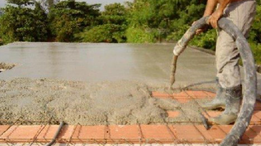

Monitorando a qualidade do cimento
O concreto viaja sem ninguém olhando.
A única conferência demora 28 dias.
A norma já exige registrar essa água. Ninguém mede.
O volume entregue nem sempre é o volume pago.

Qual laje recebeu o concreto que falhou?
Rastreador de caminhão existe. Laboratório existe. O que não existe é o elo entre os dois.
Hardware, aplicativo e banco, construídos do zero. O aviso chega com o caminhão ainda na estrada.